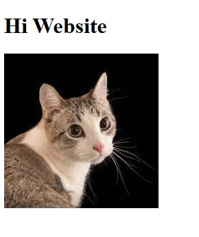

<h2 class="Espo-h2">Portfolio List</h2>

<dl class="Espo-dl">
  <dt>1. it24-midterm</dt>
  <dd></dd>
  <dd><a href=https://github.com/Espostaneous/it24-midterm" target="_blank">-My oldest project recorded in github</a></dd>
  <dt>2. 01 Laboratory - Github</dt>
  <dd><a href="https://github.com/Espostaneous?authuser=1" target="_blank">-My Github Profile Link</a></dd>
  <dt>3. GitHub Fork and Pull Request</dt>
  <dd><a href="https://github.com/hexedhorizon/it24-main" target="_blank">-Did a Fork and Pull Request on it24-main</a></dd>
  <dt>4. External Scripts - Cascading Style Sheets (Group)</dt>
  <dd><a href="https://github.com/hexedhorizon/it24-main/tree/main/css" target="_blank">-Made a CSS for our group</a></dd>
  <dt>5. Single Page Applications - Personal/Portfolio Website</dt>
  <dd><a href="https://github.com/Espostaneous/spa-jquery/tree/Espo-Single-Page-Application" target="_blank">-Forked SPA to create my own</a></dd>
  <dt>6. First Iteration - Single Page Application</dt>
  <dd><a href="https://github.com/Espostaneous/spa-jquery/tree/Espo-Single-Page-Application" target="_blank">-My SPA repository</a></dd>
  <dt>7. Prelim and Midterm Assessment</dt>
  <dd><a href="https://github.com/Espostaneous/it24-midterm" target="_blank">-Repository used for the Assessment</a></dd>
</dl>
